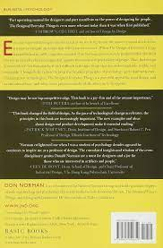
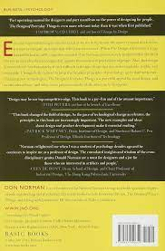

Home /
Book(01) 

{{book.bookName}}
Rs. {{book.discountPrice}}
Rs. {{book.price}}
Book Detail
The Design of Everyday Things shows that good, usable design is possible. The rules are simple: make things visible, exploit natural relationships that couple function and control, and make intelligent use of constraints. The goal: guide the user effortlessly to the right action on the right control at the right time.
Customer Feedback
Overall rating
The Design of Everyday Things" by Don Norman is a timeless classic
that has been reshaping the way people think about design.
The Design of Everyday Things" is one of the most amazing books I
have ever read. It explores the design of everyday things through the
lens of human psychology.